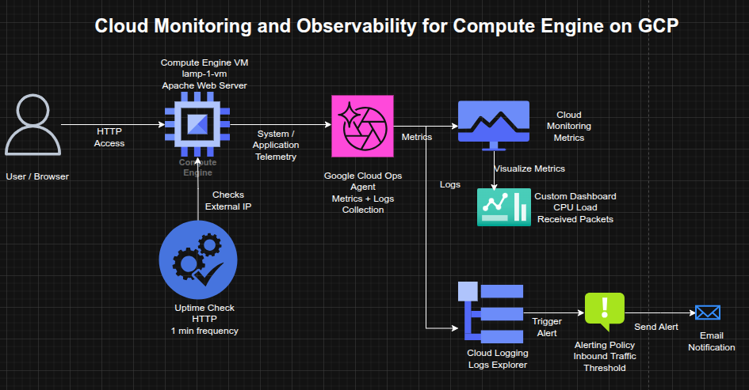

Cloud Monitoring, Alerting, and Observability for Compute Engine on GCP
Cloud Monitoring, Alerting, and Observability for Compute Engine on GCP
Timeline: December 2025
Role: Cloud Engineer / Site Reliability Engineer
Skills: Google Cloud Monitoring, Cloud Logging, Uptime Checks, Alerting Policies, Dashboards, Compute Engine, Ops Agent, Observability
Project Summary
This project focused on implementing observability and operational monitoring for a Compute Engine virtual machine on Google Cloud Platform. The work involved provisioning a Linux VM, installing Apache, enabling metrics and log collection through the Google Cloud Ops Agent, configuring uptime checks, defining alerting policies, and building a custom monitoring dashboard.
The implementation demonstrated how to move from simple VM deployment to an observable and operationally monitored workload, using Google Cloud’s native monitoring and logging services to track health, availability, performance, and incidents. :contentReference[oaicite:1]{index=1}
Objectives
- Deploy a Compute Engine VM running Apache
- Install the Google Cloud Ops Agent for metrics and logs collection
- Create an uptime check for external service availability
- Configure an alerting policy for network traffic thresholds
- Build a custom dashboard with performance charts
- Inspect logs to validate VM lifecycle events and service health
Architecture Overview
The architecture consisted of:
- A Compute Engine VM (
lamp-1-vm) running Debian and Apache - The Google Cloud Ops Agent installed on the VM for telemetry collection
- Cloud Monitoring collecting VM and agent-based metrics
- Cloud Logging ingesting system and instance logs
- An uptime check validating HTTP reachability over the VM’s external IP
- An alerting policy configured on inbound traffic thresholds
- A custom dashboard displaying CPU load and received packets

Implementation & Highlights
1. Compute Engine and Web Service Setup
- Created a Compute Engine instance named
lamp-1-vm - Configured the VM with HTTP firewall access
- Installed and started Apache HTTP Server
- Verified successful service response through the instance’s external IP address
2. Monitoring and Logging Agent Installation
- Installed the Google Cloud Ops Agent on the VM
- Enabled collection of:
- system metrics
- infrastructure metrics
- VM and service logs
- Prepared the instance for deeper observability beyond default platform telemetry
3. Uptime Check Configuration
- Created an HTTP uptime check targeting the VM’s external IP
- Configured frequent health checks to validate service accessibility
- Used uptime monitoring to simulate availability validation from an external perspective
4. Alerting Policy Setup
- Created an alerting policy based on network traffic metrics
- Defined a threshold and retest window
- Attached an email notification channel
- Added alert documentation to support operational response and incident handling
5. Custom Dashboard Creation
- Built a custom dashboard for workload visibility
- Added charts for:
- CPU Load
- Received Packets
- Centralized key VM performance metrics in a reusable observability view
6. Log Exploration and Operational Validation
- Used Logs Explorer to inspect instance logs for
lamp-1-vm - Observed operational events such as:
- service activity
- VM stop/start events
- Correlated infrastructure actions with monitoring and logging outputs
7. Incident and Availability Review
- Restarted the VM to observe:
- temporary uptime check failures
- recovery state changes
- alerting behavior
- Verified that monitoring, logging, and alerting reflected service interruptions and recovery events accurately
Design Decisions
- Used Apache on Compute Engine as a simple monitored workload
- Installed the Ops Agent to extend observability with metrics and logs collection
- Used uptime checks to validate service health from outside the VM
- Added alerting to move from passive monitoring to active operational response
- Created a dashboard to support quick performance visibility and ongoing monitoring workflows
Results & Impact
- Successfully implemented a basic observability stack for a cloud-hosted VM
- Demonstrated practical use of:
- metrics collection
- logging
- uptime monitoring
- alerting
- dashboards
- Strengthened operational understanding of how infrastructure changes surface in monitoring systems
- Built a foundation for production-style monitoring and incident response on GCP. :contentReference[oaicite:2]{index=2}
Tools & Technologies Used
- Compute Engine – VM hosting
- Apache HTTP Server – Web workload
- Google Cloud Monitoring – Metrics and uptime monitoring
- Google Cloud Logging – Log ingestion and exploration
- Google Cloud Ops Agent – Metrics and logging collection
- Alerting Policies – Threshold-based notifications
- Custom Dashboards – Centralized observability views
Outcome
This project demonstrates the ability to implement monitoring, logging, and alerting for a cloud-hosted workload on Google Cloud. It highlights practical skills in observability, service health validation, incident awareness, and dashboard-driven operations, which are directly relevant to cloud engineering and site reliability roles.